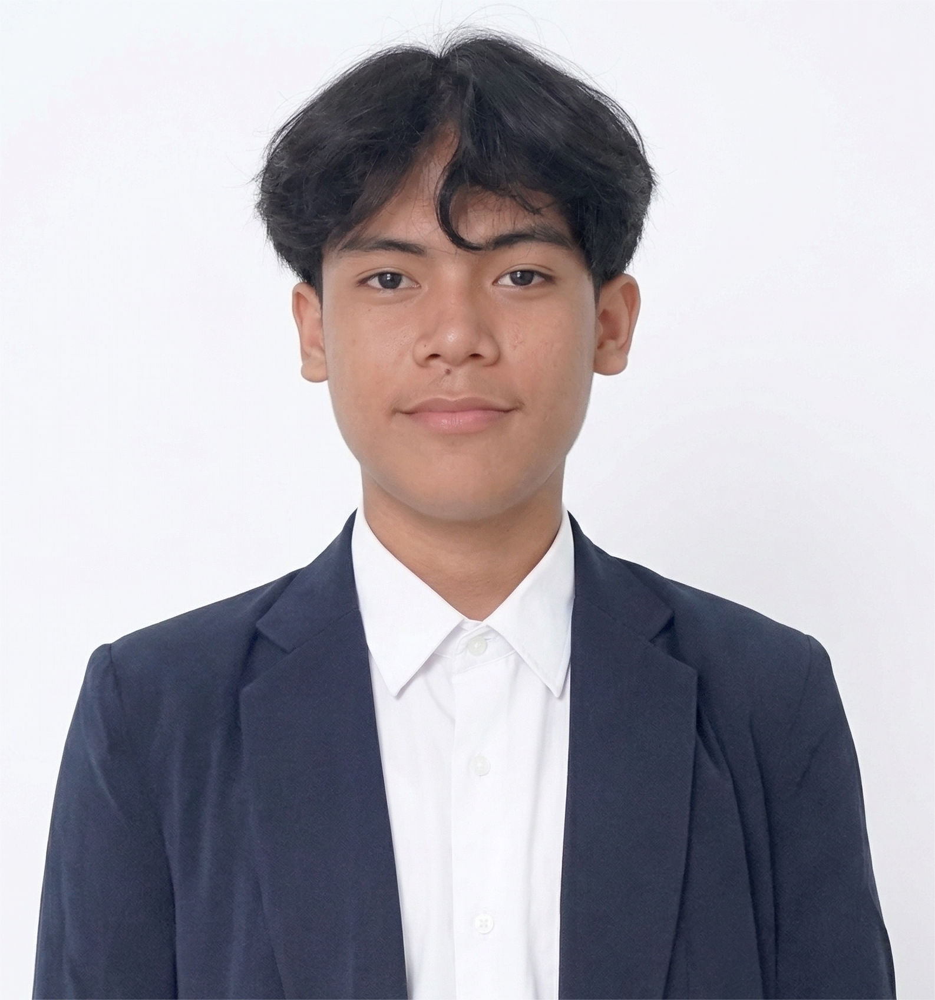

Data Analysis · Software Development · IT Operations
Mahasiswa Teknik Informatika semester 6 yang adaptif dan terbiasa mengerjakan analisis data, automasi dengan Python, serta pengembangan sistem berbasis web. Nyaman bekerja dengan tools teknis, logika problem solving, dan project yang berorientasi hasil.
Saya Hasan Yusuf Muizz, mahasiswa S1 Teknik Informatika di Universitas Al Azhar Indonesia. Minat saya mencakup area yang saling terhubung: Data Analysis, Software Development, automation, dan technical problem solving.
Saya memiliki pengalaman praktis dalam pengolahan data, analisis insight, pengembangan sistem berbasis Python dan web, serta eksplorasi tools teknis untuk menyelesaikan masalah secara efisien. Setiap project yang saya kerjakan berorientasi pada hasil, struktur kerja yang rapi, dan dampak nyata.
"Adaptif, problem-solver, dan siap berkontribusi dalam berbagai peran IT."
Aplikasi berbasis AI untuk analisis sentimen ulasan secara otomatis. Mengimplementasikan NLP untuk preprocessing dan klasifikasi teks, menghasilkan insight untuk mendukung pengambilan keputusan.
Sistem sinkronisasi file aman dengan AES-256 untuk enkripsi data berkecepatan tinggi dan RSA-2048 untuk pertukaran kunci. Backend RESTful API dengan End-to-End Encryption (E2EE).
Sistem blockchain sederhana berbasis Python untuk menjaga integritas data akademik. Hashing SHA-256 untuk mendeteksi perubahan data tidak sah. Integrasi Flask REST API + Google Sheets sebagai simulasi cloud storage.
Project analisis log Linux auth (sshd) menggunakan Splunk untuk mengolah data event, membangun dashboard, dan menghasilkan insight dari pola aktivitas login. Mencakup filtering data, visualisasi, dan pemantauan sederhana near real-time.
Project lintas domain untuk menganalisis pola transaksi finansial, mengidentifikasi aktivitas mencurigakan berisiko tinggi, dan membangun baseline model klasifikasi serta anomaly detection untuk membantu deteksi fraud secara lebih cepat.
Sertifikasi dan learning path ini saya gunakan sebagai fondasi untuk memperkuat kemampuan teknis, analytical thinking, dan kesiapan kerja di berbagai peran magang bidang IT.
Program pembelajaran terstruktur yang memperkuat dasar security operations, analisis risiko, log monitoring, incident thinking, dan pemahaman tools keamanan modern.
Learning path berbasis simulasi yang melatih observasi alert, analisis log, korelasi event, dan penyusunan insight dari aktivitas sistem secara lebih terstruktur.
Saya terus menyiapkan pembelajaran berikutnya yang relevan untuk pengembangan karier di area data, software, atau technical operations sesuai kebutuhan role yang dituju.
Terbuka untuk peluang magang, kolaborasi project, atau diskusi seputar data, software, dan bidang IT secara umum.